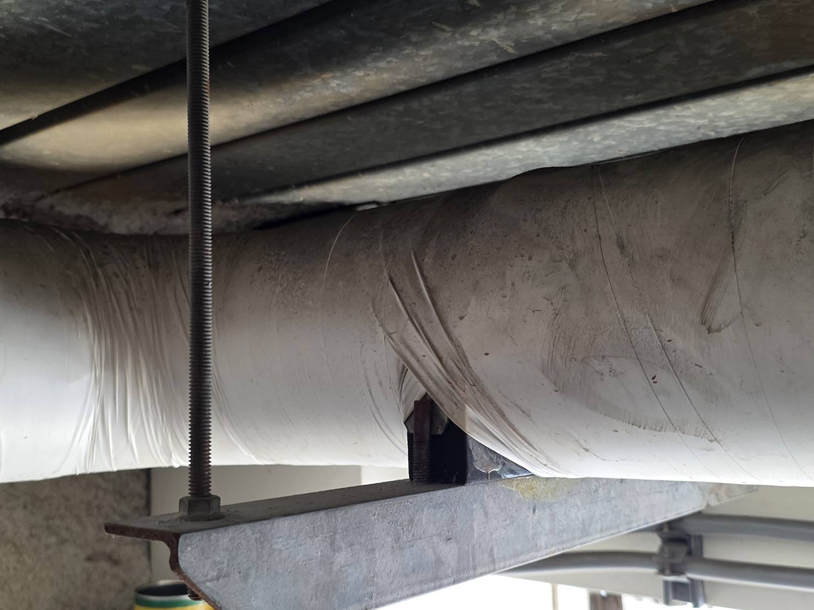

冰水主機低頻噪音｜結構傳振
主機旁不太吵，遠端卻一直嗡嗡叫。
冰水主機的低頻問題，常常不是單一設備聲，而是主機、管路、支撐、吊架、柔性接頭與建築結構共同作用。真正要找的不是「哪一台最吵」，而是哪一條路徑把振動送到受影響空間。

常見傳振路徑
低頻嗡嗡聲，很多時候不是從空氣走過來。
若聲音在遠端房間或樓下特別明顯，就要開始懷疑管路與結構傳振，而不是只看主機旁的分貝。
主機避震器
老化、受力不均、壓縮到底或規格不合，都可能讓隔振效果下降。
管路吊架與支撐
若形成剛性接觸，微小振動就可能直接進入梁柱與樓板。
柔性接頭與穿牆位置
軟接硬化、長度不足，或管路穿牆處硬碰結構，都可能形成振動短路。
建築結構共振
某些樓板或空間會對特定頻率產生放大，因此遠端感受反而比設備旁更明顯。
現場判斷

設備、避震器、管路與吊架要一起看。

主機避震狀態
確認避震器是否受力平均、有沒有壓實或失去有效行程。
吊架與結構接觸
吊架若把管路直接鎖死在建築結構上，就可能成為低頻傳遞的捷徑。
支撐與固定點
支撐間距、固定方式與柔性連接，需要配合整條管路一起判斷。
建議優先順序
先從最容易形成結構短路的地方開始。
共振案件如果一次把所有可能都拆掉重做，成本很高，也不一定找得到真正主因。較務實的方式是分階段處理、每一步都看變化。
優先 1
支撐／吊架
先檢查與建築物最直接的剛性接點。
優先 2
主機避震
確認彈簧或防震元件的工作狀態與受力。
優先 3
柔性接頭
檢查軟接是否硬化、失效或配置不合理。
優先 4
穿牆與固定點
避免管路與 RC 或鋼構形成硬接。
優先 5
量測驗證
必要時用頻譜與振動量測找主要放大位置。
相關內容
冰水主機問題，常常會和低頻與大樓結構一起出現。
FAQ
冰水主機低頻噪音常見問題
主機旁不太震，為什麼遠處還有低頻？
因為微小振動可能沿著管路、支撐與建築結構傳遞，再在遠端樓板或空間形成共振與放大。
可以保證改善多少 dB 嗎？
共振案件受到設備、管路、建築結構與頻率等多項條件影響，改善前不宜承諾固定數值。
為什麼先做吊架與支撐？
因為它們通常是管路與建築物最直接的接觸點，也最容易形成結構傳振短路。
只換主機避震器就夠嗎？
不一定。若管路、吊架或穿牆位置仍是剛性接觸，振動仍可能繞過主機避震器傳到建築物。
需要做頻譜或振動量測嗎？
若聲源與傳振路徑不清楚，量測可以協助比較不同位置、設備啟停與主要頻率差異。